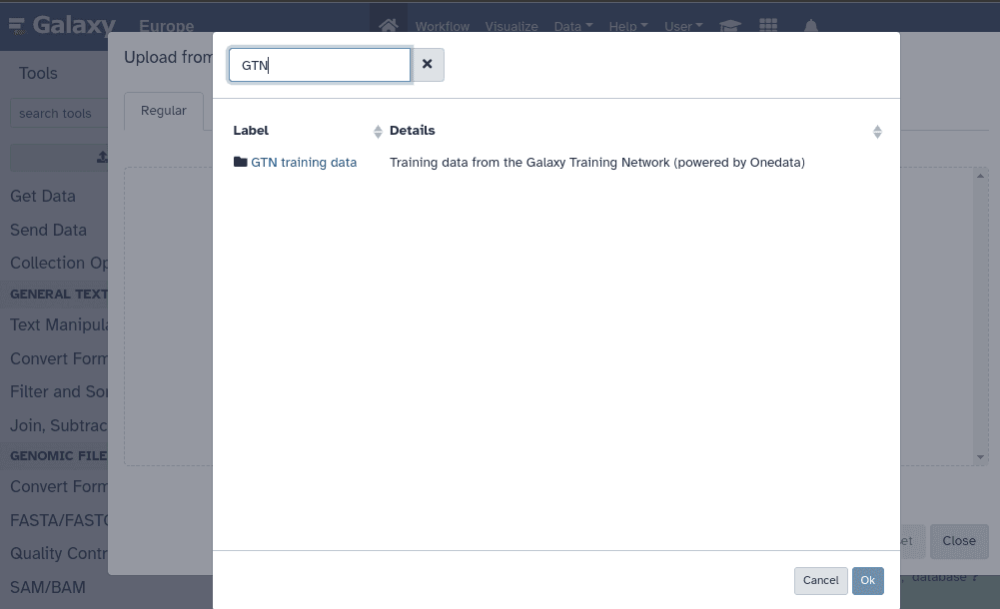

Galaxy Introduction
What is Galaxy?
Galaxy is an open-source platform for accessible, reproducible, and transparent computational research. It's widely used in bioinformatics for analyzing genomic data.

The Galaxy data upload interface
Key Features
- Web-based Interface: No need to install software or use command line
- Reproducibility: All analyses are tracked and can be repeated
- Thousands of Tools: Access to bioinformatics tools in one place
- Workflows: Chain tools together for complex analyses
- Data Management: Organize and share your data and analyses
Getting Started
To get started with Galaxy:
- Visit https://usegalaxy.org
- Create a free account or login
- Start uploading your data
- Browse and use the available tools
Main Components
Tools Panel (Left)
Search and select from thousands of bioinformatics tools organized by category
Main Panel (Center)
View tool parameters, run analyses, and see results
History Panel (Right)
Track your datasets and analysis outputs. Each analysis creates a new history entry
Next Steps
In the next module, we'll learn how to create collections in Galaxy to efficiently process multiple samples at once.